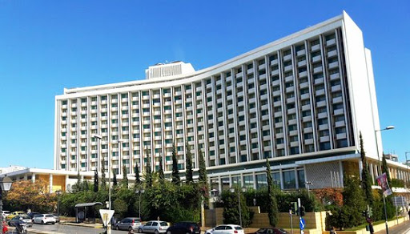

Általános információ

Általános információ
Egészség és biztonság részleteinek megtekintése
A 3 csillagos superior Centrum Hotel épülete Debrecen történelmi központjában található. A szálloda közelében található a református nagytemplom, valamint a város legfontosabb hivatali és intézményei. A szálláshely ingyenes Wi-Fi-csatlakozást és díjmentes, nyilvános parkolási lehetőséget biztosít vendégeinek.
A tágas, hangszigetelt szobák mindegyike erkéllyel, síkképernyős HD TV-vel, valamint zuhanyzós fürdőszobával rendelkezik.
Látogassa meg a világörökség részeként nyilvántartott Hortobágyi Pusztát, fedezze fel a református nagytemplomnak, a Városligetnek és a Déri Múzeumnak is otthont adó történelmi központot, vagy lazítson a várost körülölelő zöld környezetben.
Árak
- 1 nap: 4000 Ft
- 3 nap: 8000 Ft
- 5 nap: 12000 Ft
Betekintés a hálószobába